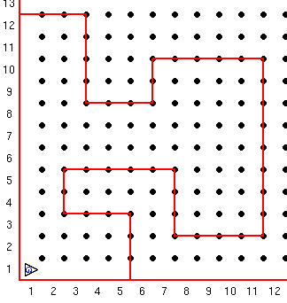

Guido wil weer zijn wereld verkennen. De laatste keer pakte hij de piepers op de hoeken van zijn vierkante afgesloten wereld. Hij wist ook hoeveel stappen er nodig waren voor zijn rondgang.
Deze keer moet hij erop vertrouwen de muren om hem heen op te merken om te beslissen welke kant hij op moet.
Aangezien hij niet het formaat van zijn wereld kent weet hij ook niet het aantal stappen dat hij nodig heeft om thuis te komen. Om dit probleem op te lossen plaats hij een pieper op zijn startpunt. Wetende dat er verder geen piepers in zijn wereld staan blijft hij lopen totdat hij thuis is. Hij weet dat hij thuis is als hij weer bij de pieper is.
Opdracht:
Guido start richting het Oosten links onder in een vierkante afgesloten wereld met een pieper in zijn pieper zak. De wereld is van onbekende afmeteing, mag he helemaal zelf weten. Hij start zijn reis en gaat door totdat hij thuis is.
Gebruik een terwijl commando (controleer voor de thuis pieper) en een als...dan om hem het avontuur te beeindigen.
Let op: Guido kan niet een doe commando gebruiken aangezien hij geen idee van de afmetingen van zijn wereld.
Opdracht voor gevorderden:
Guido's wereld is een stuk interesanter geworden. Het is niet langer rechthoekig, Guido bevindt zich in een polygoon. Als je nog geen geometrie heb gehad, een polygoon is een gesloten geometrisch figuur gemaakt van lijen met de uiteinden verbonden. Een polygoon wereld voor guido ziet er bijvoorbeeld zo uit:

Je taak is om guido rond te laten gaan in zijn polygone wereld. Hij moet weer een pieper plaatsen op zijn startpunt en langs de muren lopen net zolang to hij weer zijn pieper vindt. Deze keer is langs de muur blijven lastiger, maar dat is de uitdaging.
Deze serie Guido van Robot lessen zijn geschreven door
Roger Frank.
Commentaar and suggesties over deze lessen kunnen gestuurd worden naar
Stas Zytkiewicz die de lessen
vertaalde naar het Nederlands.
De orginele lessen zijn te vinden op de
Guido van Robot website.
Copyright
© 2003 Jeffrey Elkner.
© 2007 Stas Zytkiewicz.